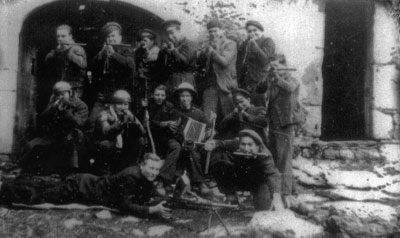
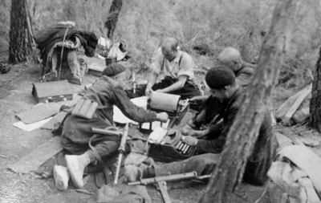

Ponencia leída en las II Jornadas "Historia y gentes: Propaganda ideológica (1936-1975)", Ainsa (Huesca), junio, 2002. Incluida como prólogo en Juan Hueso “Casto”: Informe de guerrillas, edición de Salvador F. Cava, Germanía, Alcira, 2004.
Foto portada del libro "Informe de guerrillas". Grupo de maquis en Louche á Petit-Paris, Foto superior, primero por la izquierda, posiblemente Eduardo Valero Mouchoux (Foto cedida por su esposa Carmen Martínez)
Uno de los mayores enemigos de la guerrilla fue la escritura. Dicha así, esta frase resulta explosiva. Desde luego no me refiero a las largas horas aprendiendo a escribir, a los momentos de redacción de informes, a las ocasiones en las que la lectura de los discursos de "Dolores" o de las páginas de Mundo Obrero alimentaba causas colectivas y esperanza de victoria, a las puestas en común con guión y resumen incluido; no, desde luego no estoy aludiendo a ninguna de esas circunstancias, y sin embargo a todas y a cada una de ellas en particular. La escritura fue un aliado poderoso en tiempos de guerra para el enemigo. La dos únicas maneras con las que contarán las fuerzas represivas para informarse sobre el AGLA serán las delaciones de pastores, resineros, de guardas forestales, de enlaces reconvertidos en traidores, de infiltrados, de los propios guerrilleros a base de torturas y promesas, o bien, y este es el sentido de la frase inicial, de la lectura a lápiz rojo, subrayando los nombres, de documentos y cartas intervenidos; generalmente abandonados en los campamentos al ser asaltados o hallados en los macutos de algún guerrillero muerto.
Sin embargo, y por muchas claves que se utilizaran ya fuese una serie numérica, tintas simpáticas o contraseñas, la guerrilla necesita de la información como agua de mayo, por múltiples factores objetivos: desde comunicar órdenes, valorar política y militarmente la situación del conflicto armado inmersos, estar informados de la situación nacional e internacional, o transmitir a la población su razón de ser.
Una sucinta historia del AGLA nos indica que tras la fallida invasión del Valle de Aran en octubre de 1944 se dio paso, con el nuevo equipo ejecutivo del PCE, a una nueva estrategia armada dirigida y alimentada por el Partido desde Francia contra el régimen militar de Franco. Aprovechando la presencia de grupos de guerrilleros ya dentro de la frontera y con visos a reagrupar bajo una dirección política los ya existentes en otras zonas montañosas de la Península, el PCE constituye las diversas agrupaciones guerrilleras, el llamado, popular y no sin intención, "maquis" a partir de ese momento.
La Agrupación Guerrillera de Levante, con estatutos, se forjará en agosto de 1946 en los montes del pueblo de Camarena de la Sierra, al sur de Teruel. Diversos grupos infiltrados desde Francia, antes y después de la invasión de Aran, se reúnen no sin dificultad a lo largo de la primavera de 1946 en el entorno formado por los pueblos de Chelva, Santa Cruz de Moya, Camarena y Manzanera. Las partidas de "Ibáñez", "Capitán", "Delicado"-"Medina", "Tomás", además de los incorporados desde la guerrilla urbana de Valencia: "Antonio", "Andrés", "Grande" y "Pepito el Gafas" configuran el AGL con sus tres sectores. En el año 1947, tras la detención y fusilamiento de "Andrés" y de "Tomás", y la muerte de "Rodolfo" en La Pesquera, se refunda el 5o Sector. Por último, en el mes de septiembre, y tras un paréntesis de dirección con la figura retórica de "Alfredo", se crea un nuevo Sector, el 23°, pasando a denominarse definitivamente AGLA.
En la reunión fundacional del AGL se acordó la necesidad de comunicación interna y de publicidad de su lucha para contagiar al campesinado sus ideales y fomentar la ayuda a los guerrilleros y la sublevación cuando llegase el momento. Ese es un fin propio de todas las estrategias activas de la guerrilla, motivado por su hacer social y político. Se recoge con ello el ideario de que todas las acciones de los guerrilleros deben ser ampliamente popularizadas y conocidas. Constantemente se insiste en las llamadas "Órdenes del día" en que los guerrilleros han de llevar a todos los rincones de "nuestra región las consignas claras de nuestros motivos de lucha. El paso de todo guerrillero -se insiste- ha de quedar sembrado de letreros utilizando los medios a nuestro alcance". Una de las primeras acciones del grupo de "Los Maños", o sea de "Ibáñez", será "inundar de propaganda toda una aldea" el día primero de marzo de 1946, una vez establecido su campamento en la Sierra de Jabalambre, con propaganda impresa en Zaragoza cuyo contenido transcribía el discurso de "Dolores" en el primer Pleno del PC en Francia, y una proclama dirigida a los campesinos. "No puedes imaginarte -le escribirá "Antonio" (Jefe del 17° Sector) a "Andrés" tras las primeras acciones- con qué rabia marchábamos todos sin haber podio invadir de propaganda el pueblo (Villafranca) y la carretera", y por las mismas fechas "Grande" ordena a sus jefes de grupo: "En lo sucesivo en todas las operaciones que se realicen queda obligado cada batallón a extender la propaganda que compete al caso y además la recibida por este E.M. La fabricación de banderas y carteles alusivos a nuestra lucha guerrillera quedará a cargo de los batallones, que la efectuarán con trozos de sábana teñidos o pintados, para esto se elegirá al guerrillero que más condiciones reúna para que guarde una línea estética, la pintura es una de las materias mejores a utilizar en la propaganda, pintando las fachadas de los pueblos, carreteras, los pilones de los kms, los anuncios cercanos a las carreteras, casillas de camineros, etc; también se tirará propaganda en las carreteras siempre que se atraviesen y no sea ese punto de paso continuo para los enlaces". A este respecto, las consignas utilizadas por los guerrilleros, escritas en paredes o en trozos de dos o tres metros de tela, fueron algunas como: "Ni izquierdas no derechas, todos contra Franco", "El trigo y el aceite para los campesinos, ¡Muera Franco!", "Contra el terror, unidad y lucha", "Por el pan, la paz y la tierra, ¡Viva la República!", etc. En algunas ocasiones, como señala la cita del E. M., se incluían dibujos: "Todos contra Franco (dibujo de un guerrillero con una metralleta)", o bien "(Dibujo representando la unidad del pueblo armado)".
Varios suelen ser, en los primeros tiempos, los fines específicos de lo que para ellos es la propaganda, uno de los mayores empeños y preocupaciones de su actividad. A saber: 1o: Popularizar el Gobierno republicano español presidido por el Dr. Giral; 2o: Propagar las acciones guerrilleras del AGL y sus fines de lucha por la democracia; 3o: Llamar a las fuerzas antifranquistas a la unidad de lucha, reforzando el movimiento de la ANFD, haciendo frente a cualquier gobierno que pudiese surgir a espaldas del pueblo; 4o: Llamar a los jóvenes reclutas para que deserten del servicio de Franco y se incorporen al AGL; y 5o: Que los campesinos se nieguen a entregar sus cosechas a los inspectores de abastos. Para todo ello, lógicamente, el Estado Mayor debería de procurar que cada Sector estuviera lo suficientemente abastecido de material de imprenta, entre lo que se deberá de contar con máquinas de escribir y pequeñas multicopistas, papel, tinta, clichés, y dinero y enlaces. "Haced que no se estacione en las bases" será la recomendación sugerida a los guerrilleros una vez que cualquier folleto, informe o revista se halle editado, con lo que estos se transformarán en distribuidores de la información elaborada.
Pero si ya de por sí es difícil hacer cultura para el pueblo campesino, cuánto más resulta hacerlo desde el monte. Desde el monte puede salir carbón, madera, resina, pero todo un planteamiento de acción política, con comunicados a través de hojas sueltas, panfletos o incluso hasta revistas resulta cuanto menos sorprendente. Y sin embargo, para dar a conocer sus ideales, los guerrilleros tuvieron que crear zonas de "tranquilidad" donde reunir los materiales y asentar planteamientos tras las oportunas discusiones y puestas en común, y sólo así después editar y distribuir sus ideas y sus consignas. Cierto que el primer motivo fue el de la retroalimentación de bases sólidas para el fortalecimiento del ideario común de la propia actuación, y en segundo lugar el de influir positivamente en el campesinado de la zona donde los distintos grupos actuaban. Hubo para ello que subir hasta el monte, a campamentos como los de Aguaviva, "Plaza de Toros", El Cambrón o Cerro Moreno tanto papel como tinta, máquinas de escribir, multicopistas, etc. El oficio de escribiente resultó ser imprescindible para una mayor fluidez y control de los distintos Sectores y de toda la Agrupación. "Pepito el Gafas" se encargaría constantemente de esta labor a la que también contribuyeron al menos "Antonio", "Deseado", "Joaquín", "Pedro", "Arturo", "Núñez", "Mauro", "Francisco", "Miguel" y "Fernando el Pecas" entre otros. Desde Aguaviva, el día 22 de mayo de 1947, le escribe "Pepito el (¡alas" a "Antonio" señalándole las dificultades que este esfuerzo Conlleva: "Amigo Antonio, recibimos tu nota, parte de operaciones y juntamente las 5.000 ptas. En primer lugar he de decirte >que la multi junto con la máquina de escribir y demás han desaparecido... Y como lo que más nos interesaba era la máquina para tirar la propaganda y rectificar los estatutos entramos una noche en Fárnoles y nos llevamos ésta que es cojonuda porque es muy grande".
No es difícil encontrar anotaciones de la guardia civil sobre este aspecto de la propaganda como la que sigue: "Ha sido encaminada ésta a fomentar el malestar entre los soldados de guarnición en los diferentes puntos de esta zona mediante el reparto de octavillas y amenazar a los alcaldes en sus funciones, haciendo a estos al mismo tiempo un llamamiento para colaborar a favor de las partidas. Asimismo han lanzado propaganda tratando de coaccionar a los Comandantes de Puesto... Se nota un decrecimiento en los medios mecánicos de redacción, sin duda debido por una parte a la falta cada día de mayor número de enlaces de absoluta confianza y por otra parte a la pérdida de material del "Campamento Escuela", dándose el caso de que la escasa propaganda lanzada últimamente se reduce a las cuartillas antes indicadas y a algunos ejemplares hechos con multicopista, pero estos en mal estado y redactados hace unos meses". La propia guerrilla es consciente de esta circunstancia y ellos mismos, cuando es posible, así lo pondrán de manifiesto: "La propaganda os sale un poco chapucera -le escribe "Pepito el Gafas" a "Medina"-, debéis de averiguar el motivo, seguramente el rodillo; dime lo que hay si te llega la multi, precio, marca, etc.".
Si los primeros meses de actividad guerrillera del AGL supusieron la multiplicación de acciones de propaganda, el referéndum de 6 de julio de 1947, como colofón a la llamada "Ofensiva de Primavera" o formando parte de la misma, fue motivo claro para que la guerrilla difundiera su negativa. A este respecto intensificara su oposición sembrando de panfletos las plazas de los pueblos donde se entraba, rotulando paredes, o distribuyendo comunicados a los enlaces, los cuales utilizarán cualquier forma útil para, sin ser descubiertos, y no conociendo nada más que lo imprescindible, distribuirlos, metiéndolos por debajo de las puertas, dejándolos entre los aperos, haces de mies, etc. según el momento y las labores que las personas realizaban. Los enlaces precisamente serán el correo de transmisión de las octavillas y de los ejemplares de los programas o de las revistas que se podían distribuir.
La primera necesidad informativa de la guerrilla se corresponde con la imperiosa labor de organización interna. A este respecto, y para cumplir con esta inicial vía orgánica, se emiten órdenes, comunicados, canas, oficios numerados, estado de cuentas, se realizan boletines de actividades de los diferentes Sectores, o incluso, en un nivel más primario, todos los guerrilleros dentro de su equipo llevan una libreta o un cuadernillo para estudiar, pero también para dejar notas en las estafetas o puntos de apoyo ante cualquier eventualidad. En el programa de la Escuela se insiste sobre esto último: "Todo guerrillero debe de llevar consigo una agenda personal y diario de campamento para llevar todas cuantas cosas hayan sucedido y debemos hacer en días señalados". Mucha de esa documentación será destruida por la propia guerrilla en el momento en que sea asimilada y quede superada por las circunstancias; tendrá el mismo destino igualmente cuando se presienta que puede caer en manos de las fuerzas enemigas; otras veces no da tiempo a su destrucción y caerá en manos de la guardia civil. Tal vez el mayor golpe sufrido en la pérdida de documentación interna fue el de la detención por la policía de "Andrés" en la calle Conde Altea de Valencia en el mes de febrero de 1947, en cuyo domicilio se requisaron múltiples órdenes y comunicados entre el Estado Mayor y los Sectores de la Agrupación correspondientes a la segunda mitad del año 1946 y primeros meses de 1947; y no fueron tampoco pocos los documentos y el material intervenido en Valdecuenca, Cabra de Mora o Cerro Moreno.
Si no de mayor alcance inmediato, pero sí de valor más reflexivo, muí los informes y las biografías. El parecer personal gravita en torno a ellos. La dirección en Francia los requería habitualmente. Era su forma de evaluar la situación y de tomar decisiones a medio y largo plazo. Siempre que se enlazaba con la dirección comunista se aportaban tales documentos. Constituyen además, habida cuenta de las dificultades de contacto diario y permanente, el nutriente informativo básico sobre el que tomar decisiones. "Propuse -escribe José Gros "Antonio el Catalán"- que cada uno de nosotros escribiera un informe bien amplio al Partido sobre la situación de la Agrupación... Empezaron a escribir sus informes y me los entregaron. Los metimos en un sobre todos juntos y pedí que los sellaran con el sello de la Agrupación y con laca". La subjetividad, y un lenguaje de opinión directo y contundente, es el ingrediente básico de estos escritos; por ello se recurrirá a su contraste y comparación, y a las entrevistas de los enlaces y enviados de la Agrupación con los dirigentes en Francia. El espectro que abarcan es también amplio, aunque casi todos ellos tienen un elemento común cual es el del hilo temporal engarzado con el componente biográfico. No faltan tampoco en ellos las consiguientes opiniones valorativas sobre camaradas de lucha, sobre situaciones vividas y aclaraciones sobre la suerte de algún Jefe de Agrupación muerto ("Ricardo", "Andrés"). En el año 1952, tras la orden de retirada, un buen grupo de combatientes escribiría su informe final una vez pasada la frontera. Además de testimonio, sus páginas también hay que evaluarlas dentro del contexto ideológico y político del Partido, donde los "provocadores" anidan en cualquier descuido y la autocrítica sólo puede ser personal o delatora de iguales. En realidad, casi todos los primeros párrafos de estas biografías están llenos de ilusión y esfuerzo, mientras que los últimos de justificación y desencanto. Las páginas que siguen de Juan Hueso Platero "Casto" son un buen ejemplo.
Mucho más difícil y a la vez más valioso resultaba hacerse con libros de formación y valoración: libros de historia generalmente, editados fuera y camuflados con portadas de autores validados por el régimen: Samaniego, Rubén Darío, Pemán, Fernández Cuesta, etc., que al estar prohibidos tenían que traerse de Francia clandestinamente, utilizando para ello las vías de pasos de fronteras del PCE o incluso los propios viajes que los guerrilleros hacían para contactar con la dirección en el exilio. La guardia civil sabría de ellos desde un primer momento y tras cualquiera de las innumerables detenciones de militantes comunistas a lo largo de la geografía española. En el asalto al campamento de Peñas Altas el 10 de junio de 1951, por ejemplo, se hace buena requisa de esta bibliografía. Solamente, y a modo de ejemplo, el grupo de "Andrés", "Pedro" e "Ibáñez" que pasa la frontera hacia España a mitad de junio de 1949 nos consta que portaba: "20 Documentos; cuatro cabeceras de Mundo Obrero, 50 ejemplares de la Historia del PCE; 50 ejemplares de Fundamentos-, 50 ejemplares de Carrillo "A la luz"; 25 ejemplares de Lenin "Tareas de la juventud", 50 ejemplares de Molotov; 31 Aniversario; 30 Reglamentos; 25 revistas Militar n° 1; 75 Mundo Obrero; 10 ejemplares de Gallego "Juventud Triunfante"; 25 Mundo Obrero de la resolución sobre Tito; 50 de Lenin "Izquierdismo"; 10 de José Díaz "Lecciones"; 2.000 declaraciones del CC de marzo de 1949; 2.100 programas del Partido; 50 ejemplares de Dolores "España"; 10 de Carrillo "Niños españoles"; 50 de Gromiko "Informe ONU"; 10 de Dolores "Tres tareas" y otros 10 de la misma "Saludo III Pleno JSU". Un segundo grupo que saldría un mes más tarde volvería a llevar casi una copia cuantitativa de lo mismo.
Pero, desde el punto de vista informativo y propagandístico, si por algo se personaliza la importancia del movimiento guerrilleros del AGLA es por su capacidad de promover y mantener documentación de mayor alcance, cual es la de la prensa. Partían de la propia manera de hacer y de la experiencia del partido y de sus organizaciones juveniles. Así tendrán continuidad en la labor informativa las publicaciones básicas como Nuestra Bandera, Juventud, apenas Ataque (Boletín del Alto Mando del Ejército Guerrillero), y sobre todo Mundo Obrero, tanto el del Comité Central, como el de los Comités Regionales que circularan con fluidez entre los distintos Sectores. Será bastante frecuente hallar ejemplares de este último a lo largo de toda la lucha armada, y más a partir de 1950, tanto en ediciones de imprenta como en formas de ciclostilo. La lectura de Mundo Obrero posibilitará la discusión de sus artículos en las largas horas libres que la estancia en un campamento permitía. Mundo Obrero también proporcionará documentación para completar las propias publicaciones internas, y .i partir del otoño de 1949 se erigirá en la revista básica común tanto del Partido Comunista y como del Movimiento Guerrillero. Alguno de sus artículos, inclusive, servirá como "manual para ayudarnos a frustrar las asechanzas del enemigo, a ejercer más eficazmente nuestra Vigilancia revolucionaria, vigente hoy y mañana, actual, vivo y aleccionador para ahora y para toda la larga lucha liberadora que el Partido y el pueblo tienen ante sí" {Mundo Obrero, 6 de junio de l')50, "Hay que aprender a luchar contra la provocación").
No obstante la revista propia de la Agrupación, una vez constituida la misma y contando con recursos económicos suficientes (sobre todo tras el asalto al tren pagador de Caudé en julio de 1946), será El Guerrillero, que asimismo servirá como estímulo para la propaganda de la 5a Agrupación con acciones en La Mancha, pero con buenas relaciones con el PC de Valencia. Este empuje primero llevará incluso a plantearse la realidad más que la posibilidad de sacar alguna publicación por Sectores: Conocemos Ariete (Órgano del 5o Sector) en único ejemplar publicado en noviembre de 1946, y que está formado por tres páginas editadas a multicopista y dirigidas tanto a los propios guerrilleros como a los campesinos y a los obreros de la zona de actuación de este Sector (Requena-Utiel básicamente), con especial análisis del final de la Guerra Mundial, de la opresión franco-falangista y con una llamada precisa a la labor del campesinado y de la mujer en la esperada revuelta social. Por lo que sabemos esta publicación no debió de tener más números. La República es otra de estas revistas. La publicó, seguramente desde el campamento de Aguaviva, el Sector 17°. Era el Boletín de información político y militar del EM 3a Brigada, AGL. Tuvo más números, pues su espacio de acción y su reorganización en torno a "Antonio", "Pepito el Gafas" y seguramente "Deseado" así lo posibilitó. A este respecto "Andrés" le escribiría al jefe del 17° Sector: "Es muy conveniente que, en lo sucesivo, mande Vd. algún artículo para el periódico, ya que este se tiene que mantener con la colaboración de todos los guerrilleros, así como le tiene que decir a "Pepito" que él colabore también, además llevando artículos escritos por todos los que están en las montañas. Su carácter será más guerrillero y a nosotros nos ayudarán en nuestro trabajo; así espero de Vd. que en lo sucesivo mandará artículos para publicarlos. Esto no quita que su periódico aparezca siempre y cuando Vd. lo crea conveniente, ya que en breve dispondrá Vd. de una máquina para tirarlos como nosotros" (18 de enero, 1947).
El Guerrillero, "editado en las montañas levantinas", aseguraba el pie de su titular, nace en noviembre de 1946 y dejará de editarse a lo largo de 1949. Será sustituido temporalmente por Ejército Nacional Democrático durante los años 1949 a 1952, el cual será enviado desde Francia por correo a Jefes y Oficiales de los distintos cuerpos del ejército con propaganda de tipo militar, y por Mundo Obrero, bastante menos por Nuestra Bandera, e incluso también por algún proyecto que no llegó a fraguar, como La voz del campo destinado exclusivamente a las organizaciones clandestinas de campesinos, o Capacitación que se estaba preparando en Cerro Moreno en las fechas del asalto a dicho campamento ("En el campamento -escribe Pedro- nos cogieron todo lo que había. Materiales teóricos, los M. O. que traíamos, las documentaciones y sellos, cabeceras de Mundo Obrero y fotos de Dolores..., algunos trabajos que teníamos preparados para la revista Capacitación que estábamos preparando, Nuestra Bandera, máquina fotográfica").
El proyecto propio y más ambicioso y consistente de órgano de comunicación del AGLA, como decimos, fue El Guerrillero, cabecera habitual de las publicaciones de bastantes otras agrupaciones coetáneas a lo largo de la geografía española. En la reunión de agosto de 1946 se había decidido crear este órgano de expresión propia con la colaboración de los jefes de unidades, según informa "Ibáñez". "Andrés" es el encargado de coordinarlo desde la ciudad de Valencia. Cuenta para ello con la ayuda de "Francisco" a la sazón enlace del PC en la zona de Carcagente y hermano de "Luis", jefe de grupo en el 5o Sector. A partir de noviembre se incorporará "Miguel" quien llegado desde Francia y por problemas de salud se había hecho cargo en el mes de octubre de la cocina de la primera Escuela de Guerrilleros cuyos profesores eran "Pepito el Gafas", "Arturo" y "Delicado" antes de que ésta poco después, en diciembre, se trasladase al Sector 17°. Para el primer número "Andrés" personalmente recogería en el viaje qur en el mes de octubre de 1946 realiza por los diversos Sectores los artículos escritos por "Grande", "Antonio", "Pepito" y algún otro guerrillero más.
El proyecto de El Guerrillero contemplaba inicialmente la posibilidad de una edición quincenal de unos cinco mil ejemplares. Sobre esa idea se editó el primer número en noviembre de 1946, llegándose en el tercero hasta los 7.000: "Te mando 200 ejemplares de El Guerrillero, te mando solamente estos porque la totalidad se los mandé a "Antonio", creo que por el momento aunque no son muchos podrás salir del paso con ellos, hemos hecho 7.000 para darte una idea y verás que para hacerlos lo que hace falta; y más cuando vosotros no mandáis ningún artículo, cosa que no debe pasar más y tenéis que hacer lo posible para mandarlos" (Oficio n° 2 de "Andrés" al jefe de la Cuarta Unidad de la 3a Brigada). "Ibáñez" recuerda en su "Informe" (1947) que por el mes de diciembre de 1946 llegaron al Sector 11º unos 1.000 ejemplares de El Guerrillero, unos 300 de Mundo Obrero y otros tantos de Juventud. En Enero les llegaría el número especial de ocho páginas (el número tres). Como cometario añade que "desde luego la tirada de El Guerrillero gustaba mucho a la gente; éstos no se distribuían solamente en los pueblos sino también en Valencia y otras ciudades". No se explica -interés del CC en Francia- por qué solamente llegaban pocos números de Mundo Obrero, de Juventud. Y de Nuestra Bandera que solamente les llegó en una ocasión. No obstante la impresión de "Ibáñez", la edición del número tres coincidió con la detención masiva de febrero de 1947 en Valencia. En las casas de algunos enlaces y puntos de apoyo urbanos de la Agrupación se requisaron una gran cantidad de ejemplares de este número listos para su traslado al monte: en la de Carmen Parrado Fernández 2.000 ejemplares; y en la de Quiteña Muga Zorrilla igual número.
Los siguientes números saldrían mensualmente y en cantidad menos numerosa; del número de mayo de 1947, que estaría formado por tan sólo una hoja, se editarían 125 ejemplares; y los números del verano de 1948 parece ser que se imprimieron con retraso, y todos a un mismo tiempo, así se entiende la carta firmada por "Pedro" y "Pepito" que le dirigen a "Carlos", jefe del Sector 23°, el 26 de octubre: "Te enviamos propaganda, tres números de El Guerrillero y un boletín de información sobre la cosa de los Consejos de Resistencia". A ellos parece también referirse "José el Alicantino" al anotar en su "Informe" de enero de 1949 que: "En el EM se publica a mimiógrafo El Guerrillero. Ejemplares de este periódico han llegado a los campamentos 17 y 23, precisamente cuando "José" salía ya para Francia. "José" no quiso traerse ninguno ya que en la forma que tenía que hacer el regreso era arriesgado". Cuando la policía detiene a "Miguel" en el número 76 de la calle Jesús, el 20 de febrero de 1947, en su casa le encuentran los ejemplares del número de ese mes, además de los útiles de edición: una multicopista REX-ROTARY, dos multicopistas de bolsillo para octavillas, planchas, clichés, y tres mil ejemplares de El Guerrillero. A partir de entonces el periódico habría de editarse en el monte, pues la caída de "Andrés" no era sino el colofón de la de toda la cúpula del Comité Regional de Valencia (Mariano Ortega Galán, Alberto Sánchez Bascuñán, Manuel Moreno Mauricio y Francisco Béjar Toro) del que se nutría la guerrilla y que hacia finales del año será reconstruido con Valentín Bea, Antonio Martínez y un infiltrado policial -con la herida sangrante que ello supuso para el Partido y para el AGLA-: José Tomás Planas; pero también con una breve duración pues sus máximos responsables, excepto el último de ellos, serían detenidos a principios de 1948.
El número cinco y los siguientes de El Guerrillero serán editados ya en el monte. "Pepito el Gafas", a la sazón responsable de la Escuela Guerrillera de Aguaviva, será el encargado de los mismos. "Ibáñez" así lo precisa: "este camarada ha sido también el encargado de la cuestión de propaganda y, concretamente, de sacar el número de junio de El Guerrillero". Contará para ello con la colaboración de "Deseado". Y seguramente con miras a esta labor se dirigirá por carta a "Medina" (Jefe del Sector 5o desde junio de 1947 a mayo de 1948) señalándole algunos aspectos de los partes de operaciones: "He leído tu parte de operaciones, está bien, pero hay monotonía en las acciones, todos se refieren a tirar propaganda, con este objeto puedes intercalar otras no ciertas y darle así un aspecto más variado; por ejemplo: fue impuesta multa a falangista, somatenista, etc., se hizo efectiva en el acto en el término de tal pueblo, etc.". Es difícil saber los números que se editaron bajo esta dirección. No debieron ser muchos habida cuenta de las fechas del asalto a este campamento y de la muerte de "Deseado", lo primero el 14 de marzo de 1947, y lo segundo en Torreblanca (Castellón), el 22 de abril de 1948. De dos meses más larde a dicho asalto es la carta ya citada que "Pepito" le escribe a Í" Antonio" donde le comunica las dificultades tanto para editar la propaganda como para rectificar los estatutos. Al desaparecer la multicopista y la máquina de escribir tienen que hacerse con una nueva en Fórnoles. No obstante las dificultades no acaban ahí pues el tema de los materiales de imprenta se extiende ahora, y casi siempre, a la disponibilidad de papel, de tinta y de clichés. En la misma carta añade "Pepito": "Te remitimos 125 números del periódico y del parte pues no tenemos aquí más de un paquete de papel, y esta multi no va muy bien, sale algo chapucero y es más costoso; además los clichés se rompen enseguida. Comprar clichés y tinta si podéis, pues nosotros si no viene alguno de los dos que te digo estamos parados". Precisamente una de las circunstancias más comentadas del AGLA, como fue la deserción de "Cojonudo", de alguna manera tuvo que ver con la labor de suministro de papel para sus continuos escritos. En Teruel, adquiriendo en el conocido establecimiento de los Perruca una buena cantidad de material para las labores de capacitación en el "Campamento Escuela", fue descubierta Angelines López Rodríguez, natural de Valdecuenca, lo que implicó que, tras atravesar a pie hasta su pueblo toda la sierra de noche y con nieve, más de 40 km„ se uniera junto con sus dos hermanos "Isidro" y "Eduardo" a los guerrilleros. Al ser enviada a Valencia por la dirección del 1 Io Sector acompañada de Francisco Jurado, éste ya no se reincorporaría al monte.
Tras las dificultades en el Sector 17°, y una vez que en la segunda mitad de ese año 1947 se cree el llamado "Campamento Escuela" en el 1 Io, es bastante posible que la edición de la revista del AGLA se trasladase hacia el nuevo emplazamiento situado ahora en los Montes Universales y siguiendo la estela del Estado Mayor de la Agrupación. De nuevo allí sería "Pepito el Gafas" el encargado de la edición para otra vez, tras ser asaltado a finales de 1947 este lugar, trasladar la imprenta hacia la zona de Cerro Moreno. Del llamado "Campamento Escuela", y sobre el tema que nos ocupa, la guardia civil se llevaría varias máquinas de escribir Olivetti y Royal, una multicopista y abundante documentación, aunque tal vez tampoco esté demás conocer a fin de substanciar el significado de este campamento dentro de la historia del AGLA que también se requisaron "unos treinta borregos aproximadamente, ya sacrificados". Con todo, y retomando el hilo de El Guerrillero, conviene precisar que al menos durante el segundo semestre de 1947 no debió de editarse ningún número nuevo. Así lo confirma "Pedro" al poco de incorporarse y hacerse cargo de la agrupación guerrillera en su informe del 27 de noviembre de 1947:"El Guerrillero, periódico de la Agrupación, y boletines de información política y militar, que no se habían tirado anteriormente muy a menudo, desde hace 6 meses no han vuelto a aparecer". Con mucha probabilidad desde la zona de Cerro Moreno se editarían a lo largo1948 y 1949 los nuevos números de la revista. Cuando a principios de 1949 salga hacia Francia una comisión de guerrilleros formada por "Ibáñez", "Pedro", "Mateo", "Rubio" y "Lorenzo" llevarán entre su documentación los últimos números editados. A su vuelta a la Agrupación, y tras el asalto de Cerro Moreno, "Pedro" informa sobre las dificultades y atraso surgido en la edición de Mundo Obrero del mes de noviembre ya preparado con colaboración de "Andrés","Ramiro", "Pepito el Gafas" que sigue siendo el encargado de la edición y del propio "Pedro". La falta de papel es lo que más preocupa:"Los recursos y medios para el trabajo sufrieron gran trastorno... Consideramos conveniente... hacernos con papel que no teníamos,.. .al llegar aún no se había conseguido papel… Nosotros aquí hemos empezado a recibir papel últimamente 2.000 folios para multicopista y 200 para imprenta, y tenemos los materiales para diciembre pero dado el lugar donde se encuentra la multi y que sólo un camarada de los que está ahora con nosotros lo sabe y que tiene que enlazar con el amigo que nos tiene que proporcionar papel (él tiene el encargo de hacernos un buen stock)..."
A multicopista se editó El Guerrillero. El AGLA también disponía de Imprenta en el monte. Pero con ella las dificultades de edición eran mili mayores: "A la imprenta -señala "Pedro"-, es un modelo muy viejo y muy pesado, le faltaban letras; últimamente nos han traído mis pero hay que hacer otro encargo más pues aún son insuficientes". I Desconocemos el número exacto de distintos ejemplares editados a los que se llegaría en su difícil vida de tres años. No parece que haya colecciones completas. En el Archivo más idóneo y mejor preparado como es el de la PCE se conservan bastantes números; el primero correspondiente al mes de noviembre de 1946, y el último a septiembre de 1949. En total dicho Archivo atesora 15 ejemplares de los siguientes meses: 1946 (noviembre y diciembre); 1947 (enero, febrero, mayo); 1948 (junio, septiembre, noviembre, diciembre); 1949 (febrero, marzo, abril, mayo, junio y septiembre). Dado que, excepto los editados en la ciudad de Valencia, los restantes se imprimen sin numerar, resulta difícil el esclarecimiento de las lagunas existentes.
El Guerrillero en su número inicial ya marca el formato y las coordenadas teóricas de su impronta. Se tratará de una edición a ciclostilo en este caso de cuatro paginas, que serán ampliadas en números posteriores y cuando la ocasión lo permita hasta ocho, siendo su momento más crítico el intervalo de la detención de la dirección en Valencia y la puesta en marcha de esta labor en el monte. Así el número de mayo de 1947, como ya indicamos, consta de una sola hoja, con una elaboración muy alejada de la perfección que se había logrado en el número tres, considerado como número extraordinario, y en cuya cabecera, la del número de mayo, consta como realizado por la 3a Brigada, o sea por el Sector 17°. La revista se presenta siempre con una portada donde figura una cabecera manual con el nombre y un dibujo de la lomas de unas montañas donde ondea una bandera de querencia republicana. El texto se distribuye a dos columnas mayoritariamente. El alcance de sus contenidos va desde la presentación fijando posturas en torno al gobierno Giral, parte de operaciones de la Agrupación por sectores con especial énfasis en la voladura de centrales eléctricas, vías férreas, encuentros armados con la guardia civil, y toma de pueblos. Habrá también llamadas a diversos colectivos sociales, con especial cuidado de los campesinos. Se dedica igualmente un apartado a recoger noticias de la represión franquista, a criticar burlonamente la actitud de algunos gobernadores civiles, a menoscabar el ánimo de la guardia civil y a testimoniar las razones personales de la lucha con artículos individuales de algún guerrillero. Falta en este primer número la presencia de colaboraciones tomadas en forma de extractos de otros medios hermanos: de Mundo Obrero o de discursos de señalados dirigentes del Partido que a lo largo de la vida de El Guerrillero también se sumarán.
En los tres años de vida montaraz, El Guerrillero también se hará eco, siempre desde sus moldes informativos y valorativos, de los cambios que se ultiman en las directrices políticas del Partido. La variación más notable afectará a la amplitud dedicada a los artículos de opinión por una parte, y a la de acciones o partes de operaciones por otra. Así, si en los primeros números este segundo componente de acción armada resulta básico, a partir del año 1948 ya se percibe una tendencia a completar la revista con artículos de opinión, con reseñas, con noticias tomadas de la radio, ("Pepito", dirá "Mangual", escucha en unión de otro camarada las emisiones de R.E.I), o con colaboraciones literarias. Es sobre todo en el año 1949 cuando este cambio de norte en los contenidos queda patente. La capacitación teórica de los guerrilleros pasa a ser el germen de esta reorientación. Así aparecen en los diversos números largos artículos con comunicados oficiales de la reunión del Estado Mayor de la Agrupación, se recogen noticias de otras agrupaciones guerrilleras, se comentan temas de política nacional como la entrada de España en la ONU, se trata el tema de Paz en el mundo siguiendo los postulados del Partido en el exilio, se reproducen fragmentos de discursos de destacados líderes del Partido, así como también del Presidente de la República, etc. Por lo que respecta a las operaciones de la guerrilla, en estos últimos números, más que un recuento de las mismas, lo que se procura es el comentario de alguna de ellas recordando el valor y enalteciendo el recuerdo de algún camarada desaparecido. Dentro de esta línea también se ahondará en la represión sufrida por el pueblo de mano de la guardia civil. La guardia civil, los gobernadores, en especial Pizarro Cenjor, serán objeto de burla y de crítica constante. A este respecto, habitualmente se colará en la revista algún pequeño detalle de humor gráfico.
El comentario que la prensa, y en especial El Guerrillero suscita entre los componentes de los diversos batallones es de simpatía, ilusión y aprecio. La palabra escrita ofrece ese magnetismo. Tal valoración la señala, por ejemplo, "Pedro" a propósito de los artículos en Mundo Obrero de Jesús Izcaray, o "José" cuando en su informe ya mencionado de principios de 1949 expresa que: "Él pudo leer algunos números y vio que estaban bien orientados políticamente, se veía que los camaradas había obtenido materiales del Partido por algún conducto -quizás por Radio España Independiente- ya que planteaban tareas tal y como se plantean en nuestra prensa en Francia. Dedicaban gran atención a la creación de Consejos de la Resistencia. Daban incluso datos de Comités creados en pueblos de los Sectores 17° y 23°... Los periódicos daban también partes de guerrilleros". Pero las noticias recogidas en El Guerrillero no siempre fueron bien interpretadas por la propia AGLA. Los partes de operaciones de los sectores daban cuenta de sus acciones. En la página 5 del número 3 se hacía referencia a la muerte del anarquista "Petrol", quien fugado del depósito municipal de Mas de las Matas el 17/5/40 había constituido en torno a su persona una amplia partida independiente. Su muerte, a mano de "Mátalas" y por orden de "Antonio" en Mosqueruela el 24 de diciembre de 1946, no era conocida por todos los enlaces ni guerrilleros del Sector 17°, por eso "Antonio" le comentará a "Andrés" el error cometido en carta del 2 de febrero de 1947: "Al parecer el enlace que bajó debe de ser el que en el tercer número de El Guerrillero vio la noticia de lo de "Petrol" en el parte de operaciones. Fue un olvido el (no) decir que era un asunto completamente secreto, que ni los mismos enlaces sabían y que por las circunstancias que lo rodeaban, familia, popularidad infundada, de no convenir hacerlo público. Como consecuencia: la noticia debe ser corregida, mejor dicho borrada de los números que se pueda y que no estén repartidos y muy particularmente los de esta zona".
La prensa del AGLA también llegaba a Toulouse y a París. Si ya Mundo Obrero le había dedicado un suplemento (n° 102) en 1948 destacando "Un año de lucha guerrillera en Levante", y hasta se había editado un manifiesto de los guerrilleros, supuestamente en México DF, en pro de un Consejo Central de Resistencia Antifranquista, en la reunión que en 1949 en la capital francesa mantienen "Pedro", "Rubio", "Lorenzo" e "Ibáñez" con Santiago (Carrillo) sale a relucir el análisis de los últimos números. Carrillo planteará cuestiones de análisis detallado: sobre la ostentación de lo que comen los guerrilleros, ataques impolíticos a la guardia civil, manifiesto del 1 de enero de 1949, de dónde sale la consigna de un Frente Nacional de Salud Pública, se da cuenta de la muerte de "Antonio" (en el número de marzo de 1949) pero no de la de "Ricardo". A la postre El Guerrillero quedaría sustituido y en el viaje de vuelta en el verano de 1949, que concluiría con el consabido enfrentamiento de Cerro Moreno, los dos grupos que parten a reforzar la estructura política más que militar del AGLA llevan en sus mochilas además de otros enseres múltiples ejemplares y libros de propaganda como ya apuntamos.
Terminamos con una anécdota que explica el complejo mundo del que se ha nutrido no sólo la realidad concreta de la guerrilla, sino también su singular distorsión, interesada o engrandecida y que forma parte de la convivencia silenciosa de los años de la dictadura, ya que mezcla, dentro del tema que nos ocupa, realidad y fantasía. El día 10 de diciembre de 1946, a las 17 horas, cuatro guerrilleros del 5o Sector, "El Chaval", "Segundo", "El Mejicano" y "Chingalito", dan un golpe económico en la Oficina de recaudación de contribuciones de Requena, sita en la calle García Montes, n° 10. Los tres primeros, presentándose como guerrilleros de Levante, entran dentro, ponen manos arriba a todo el personal, seis empleados y cuatro labradores, y se apoderan de una pequeña caja de hierro que contenía 62.358 ptas. con 28 céntimos. Piden también los recibos sin cobrar y antes de marcharse los queman en el pasillo. El personal que se encontraba dentro no reconoció a los asaltantes: "que eran altos", "delgados", "al descubierto", "entre veinte y treinta años", "vestidos de pana", "ojos oscuros y alguno tocado con boina". En su marcha la calle abajo con dirección a las afueras del pueblo "El Chaval" lanzó un buen puñado de propaganda que algunos transeúntes recogieron. También la guardia civil cuando se personó en el lugar e hizo el consiguiente atestado requisó "tres hojas clandestinas tituladas El Guerrillero". Sin duda ejemplares del número 1 de la revista de la Agrupación. Se arrojaría también un manifiesto dirigido "al pueblo de nuestra región". Hasta aquí la realidad. Desde aquí la figuración, en este caso admirativa, porque generalmente la querencia popular en las zonas donde los guerrilleros han actuado ha estado siempre del lado de los mismos. Y así, cuando hoy en día hemos querido contrastar datos sobre este hecho, las personas que lo recuerdan lo recrean señalando que los guerrilleros siendo solidarios con el pueblo al que querían liberar al salir de la oficina de impuestos no sólo quemaron los recibos de los contribuyentes para que Hacienda no los reclamase, sino que además tiraron varios puñados de billetes que la población necesitada recogió gozosa, lo cual también contribuyó a facilitar su huida entre el alboroto callejero que se formó. Lo cierto es que no hubo tal acto al estilo Robin Hood, y sí una acción encaminada, en este caso a proveerse de dinero para su subsistencia en el monte, y tras ella una de las primeras acciones de propaganda, diseminando o repartiendo El Guerrillero recién en las mochilas. La acción inclusive, aunque esto tenga un sentido más de historia interna, sirvió para calibrar el cuestionado ingreso en la Agrupación de "El Mejicano" y de "Chingalito". Al primero se le creía un infiltrado de la policía y no se le aceptará, en tanto que el segundo morirá en un enfrentamiento durante el mes de octubre de 1947, en el puente de Campanar de Valencia, cuando ya había desertado un numeroso grupo del 5º Sector.
|  |
| Campamento de Aguaviva, 1947 (AIMV) |